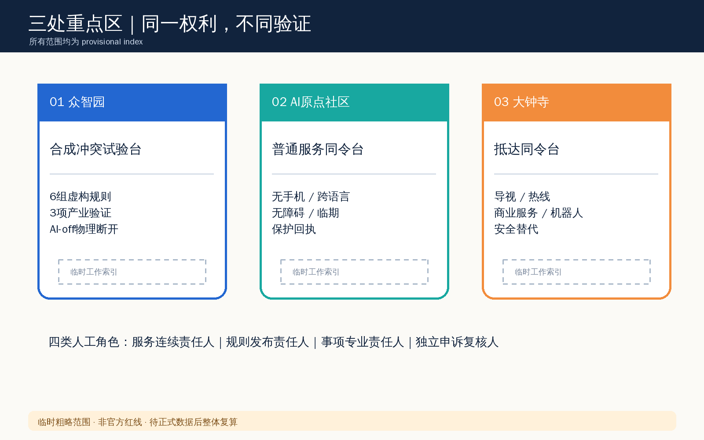
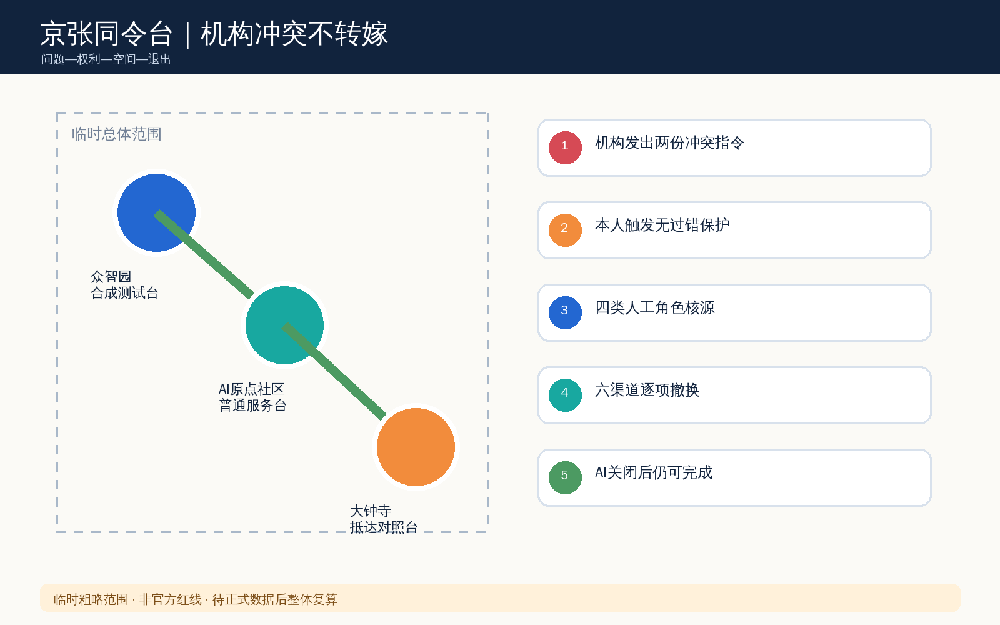
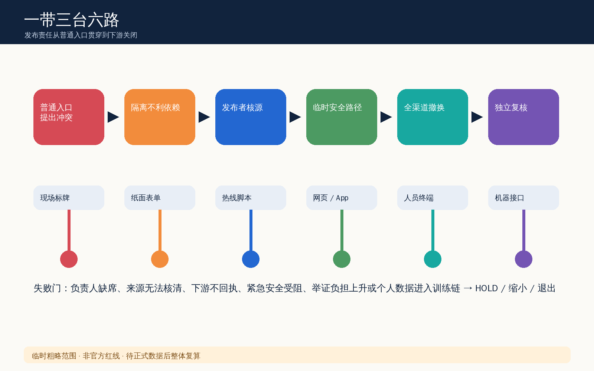
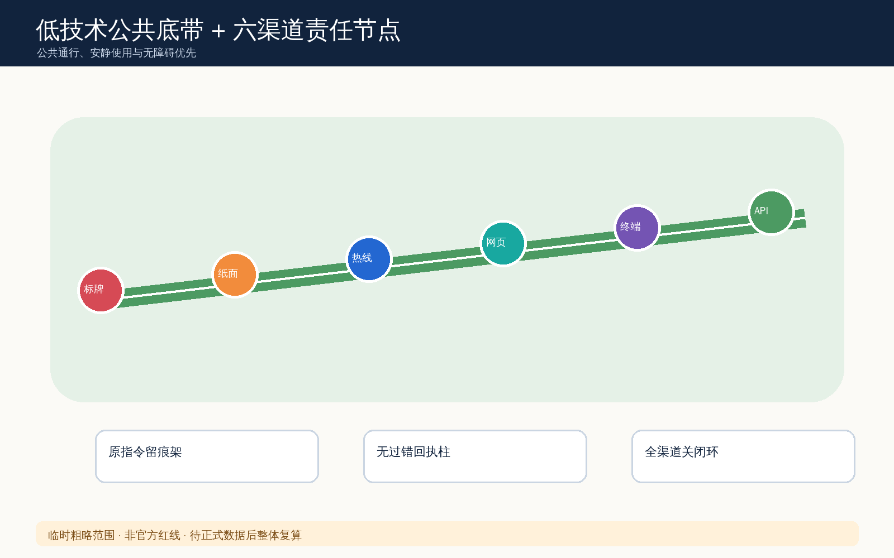
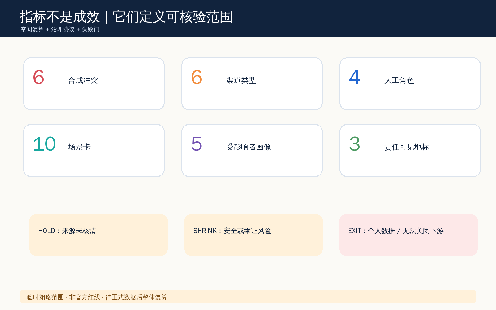

重点区域

机构渠道冲突时，人不替机构承担冲突成本

统筹原则 → 总体服务链 → 三处桌演。临时边界只作索引。
HOLDSHRINKEXIT
四类概念支撑：合成研发、低技术开敞、发布责任服务、普通入口服务；不作法定用地结论。


P1 合成规则；P2 可达普通入口；P3 全渠道关闭；P4 去标识复盘。
10 场景 / 5 画像 / 3 合成产业验证 / 4 人工角色 / 完整 AI-off。
agent.1 品牌结构；agent.2 七案例生态；agent.3 十场景五画像；agent.4 三地标；agent.5 责任文化；agent.6 年度运营。

deterministic / spatial / visual / professional 门由 persisted self-check 记录；人工视觉复核另行执行。
公告、任务书、site package、source registry、provisional boundary；无外部图片和远程资产。
无正式边界/控规/权属/专业授权；来源不明、安全受阻、举证上升或个人数据进入训练 → HOLD / SHRINK / EXIT。